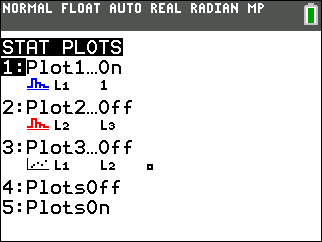
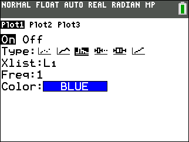
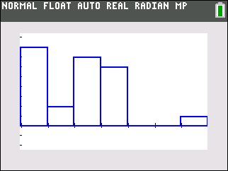
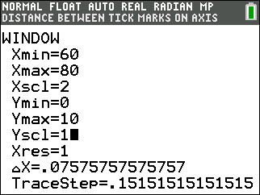
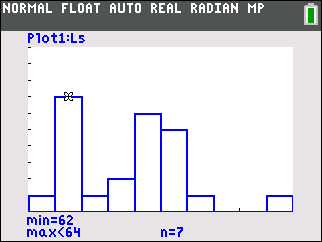
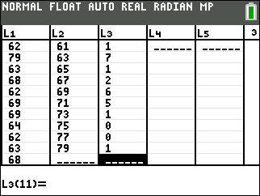
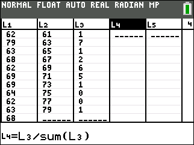
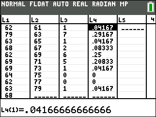
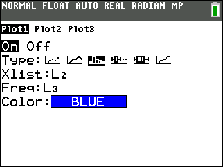
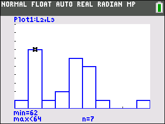

Section 2.2 Organizing Quantitative Data
¶Definition 2.2.1.
A bar graph is for qualitative data while a histogram is used for quantitative data. In a histogram, data is grouped into classes or bins.
Notes on histograms:
- Bars have equal widths
- Bars are touching
Terminology related to histograms:
- lower class limit: smallest value in a class
- upper class limit: largest value in a class
- class width (bin width): difference between consecutive lower class limits (or upper class limits)
- open ended: a table where the first class has no lower limit and/or the last class has no upper limit.
Subsection The Shape of a Distribution
¶One reason for going through the trouble of displaying data in a histogram is to determine the basic shape of your data. The four most common shapes are:
Subsection Create Histograms and Frequency Distributions from Data Using the TI-84 Plus
¶The TI-84 Plus calculator can generate histograms and frequency distributions from raw data. Normally, one would first sort their data, separate it into classes to create a frequency distribution and then plot the frequency distribution with vertical bars to generate a histogram. However, when we use the calculator, we will first generate the histogram and then read off the frequencies from the height of each bar to create the frequency distribution.
The data below was generated by asking each student from a statistics class to give their height in inches.
| 62 | 79 | 63 | 68 | 62 | 69 |
| 69 | 64 | 62 | 63 | 68 | 71 |
| 72 | 68 | 63 | 70 | 63 | 67 |
| 60 | 66 | 71 | 69 | 70 | 71 |
To create a histogram of the height data above do the following:
- Enter the data in the above table into list 1. This can be done by pressing
stat,1and then using the cursor to select list 1. -
Press
2nd,y=to enter the STAT PLOTS menu. (Make sure Plot2 and Plot3 are OFF by pressing4(PlotsOff) if necessary.) Choose Plot1 by pressing1. -
Make your screen match the image below:
 -
Press
zoom,9. This will cause the calculator to bin the data according to its internal algorithm and display the histogram.You can press
traceand move the cursor to check the class/bin limits the calculator chose. -
Press
windowand modify Xmin, Xmax, Xscl, Ymin and Ymax to match the screen below. Setting Xscl to 2 changes the class/bin width to 2 (inches). -
Press
graphto display the new histogram.You can use the
traceand cursor keys to check the lower and upper class limits for each class as well as the count or frequency. The screenshot above indicates that the class of heights between 62 and 64 inches contains 7 individuals. -
If you use the
tracefeature to determine the frequency for each bar (class) you can generate a frequency distribution. On the TI-84 Plus calculator, instead of using the classes we instead enter the class midpoints in list 2 and the frequencies in list 3.Height Freq. 60–<62 1 62–<64 7 64–<66 1 66–<68 2 68–<70 6 70–<72 5 72–<74 1 74–<76 0 76–<78 0 78–<80 1 Sum: 24 Table 2.2.4. Height frequency distribution -
Next, we can have the TI-84 Plus calculator generate relative frequencies for us. Let's store the relative frequencies in list 4. Go to
stat,1and edit list 4. Cursor to the list 4 header, i.e. cursor up until the header is highlighted (shaded black) and press the following:choose CALC and then press the following keys:2nd3÷2ndstat,52nd3)enterThe resulting frequency and relative frequency distributions are reproduced here.Height Freq. Rel. Freq. 60–<62 1 .04167 62–<64 7 .29167 64–<66 1 .04167 66–<68 2 .08333 68–<70 6 .25000 70–<72 5 .20833 72–<74 1 .04167 74–<76 0 .00000 76–<78 0 .00000 78–<80 1 .04167 Sum: 24 1.00000 Table 2.2.5. Height frequency/relative frequency distribution
Subsection Creating Histograms from Frequency Distributions Using the TI-84 Plus
¶Perhaps you don't have access to raw data, but you do have a frequency distribution of the data, then you can still create a histogram of the data.
In this section, we will continue using the height data in table Table 2.2.3. Further, we will assume you have the same list data generated in that example in lists 2,3 and 4 of your calculator.
To create a histogram from a frequency distribution:
-
Go to STAT PLOTS by pressing
2ndy=and choosing Plot1. Assuming you have the class midpoints in list 2 and the frequencies in list 3, we can generate a histogram by filling out the Plot1 menu to look like below: -
If you have not changed any settings in
window, then you can just pressgraphto generate the histogram. If you have changed window settings use ZoomStat by pressingzoom9.
Reading Questions Cigarette Tax Rates
The table shows the tax in dollars, on a pack of cigarettes in each of the 50 states and Washington D.C. as of January 2014.
| 0.425 | 1.339 | 0.60 | 0.17 | 0.45 | 1.53 | 2.52 |
| 2.00 | 0.37 | 0.36 | 1.70 | 0.44 | 0.62 | 0.60 |
| 2.00 | 3.20 | 2.00 | 0.64 | 1.25 | 1.41 | 2.50 |
| 1.15 | 0.57 | 2.00 | 0.80 | 1.03 | 1.70 | |
| 0.87 | 1.98 | 3.51 | 1.68 | 1.31 | 2.62 | |
| 0.84 | 0.995 | 2.00 | 2.70 | 1.60 | 0.30 | |
| 3.40 | 1.36 | 2.83 | 1.66 | 3.50 | 3.025 | |
| 1.60 | 0.79 | 0.68 | 4.35 | 0.57 | 0.55 |
Note: Normally when doing the following steps by hand, the first two steps are done in reverse, i.e. you first create a frequency distribution, and then use that data to create a histogram. However, since we will use the TI graphing calculator for the first two steps, we will have the calculator do the counting for us and then just read the frequency distribution data from the histogram.
1.
Use your TI-84 Plus calculator to construct a histogram with lower limit $0.00, upper limit $5.00 and class width of $0.50.
Answer2.
What is the shape of your distribution?
3.
Construct a frequency distribution and relative frequency distribution.
HintUse your histogram to get the frequencies, put them in a list, and use your calculator to compute the relative frequencies.
| Class | Freq. | Rel. Freq. |
| 0.00—0.49 | 7 | .13725 |
| 0.50—0.99 | 13 | .2549 |
| 1.00—1.49 | 7 | .13725 |
| 1.50—1.99 | 8 | .15686 |
| 2.00—2.49 | 5 | .09804 |
| 2.50—2.99 | 5 | .09804 |
| 3.00—3.49 | 3 | .05882 |
| 3.50—3.99 | 2 | .03922 |
| 4.00—4.49 | 1 | .01961 |
| 4.50—4.99 | 0 | .00000 |
4.
Construct a relative frequency histogram with window settings:
- Xmin = 0
- Xmax = 5
- Xscl = 0.5
- Ymin = 0
- Ymax = 0.3
- Yscl = 0.05
5.
What percentage of states have a tax of $3 or more on a pack of cigarettes?
We can use the calculator to answer this:
Thus about 11.8% of states have a tax of $3 or more per pack of cigarettes.
Definition 2.2.8.
A stem and leaf plot is another way to display quantitative data where the rightmost or last digit of a datum is called a leaf and the other digits form the stem.